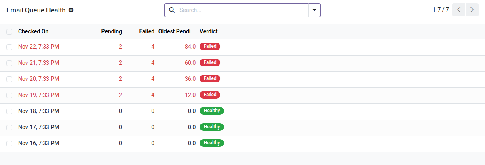
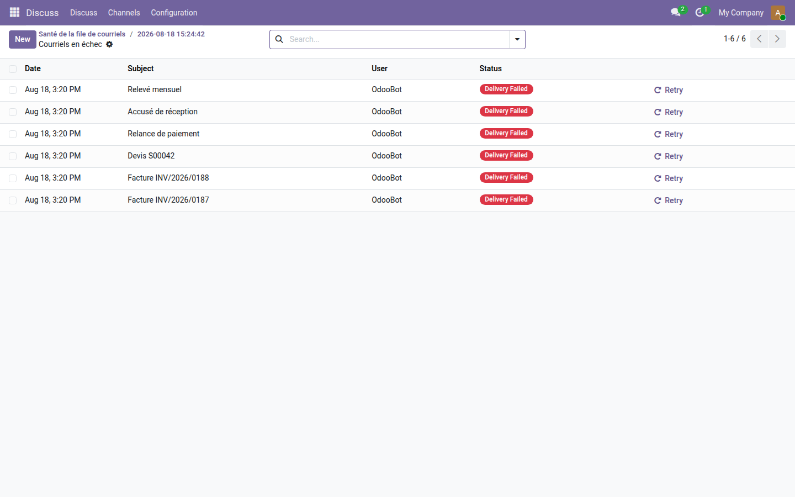

Email Queue Monitor
Find out the same day that your emails have stopped going out — not three months later.
A misconfigured outgoing server makes no noise. Emails pile up in mail.mail, the queue grows, and nobody finds out until a customer asks why they never received their invoice. Odoo can resend a failed email; it monitors nothing.
What it adds
- 🩺 A daily checkup — how many are waiting, how many have failed, how long the oldest one has been waiting, and for what reasons.
- 🚨 An alert that does not go through email — warning about a dead queue by sending an email would mean asking the patient to deliver their own diagnosis. The alert is an activity, readable in the interface whatever the state of the outgoing server.
- 🔕 Only one open alert at a time — an outage lasting weeks does not produce one activity per day, otherwise nobody would read them anymore.
- ↩️ Bulk resend — one button puts everything that failed back in the queue, once the server is fixed.
Real screenshots
1. The state of the queue, day after day
Three healthy days, then four failed checks: the exact date the outgoing server gave up can be read at a glance.

2. What is dead, and what to do about it
From the check, a button leads to the emails concerned: invoices, quotations, reminders. Each one can be resent once the cause is fixed.

Why install it
- The stalled-queue threshold is set with a system parameter; everything else works without configuration.
- A test checks that the alert itself sends no email: the promise is verifiable, not just declared.
- Open source module, LGPL-3 license — no subscription, no external dependency.
Going further
Monitoring the queue is one thing; answering customers is another. The OdooSkills range includes a complete Helpdesk family — tickets, response-time commitments, knowledge base — and a scheduled actions monitor, its natural neighbor. Full catalog: apps.odooskills.com.
License LGPL-3 — compatible with Odoo 19.0 Community and Enterprise. Support: apps@odooskills.com.